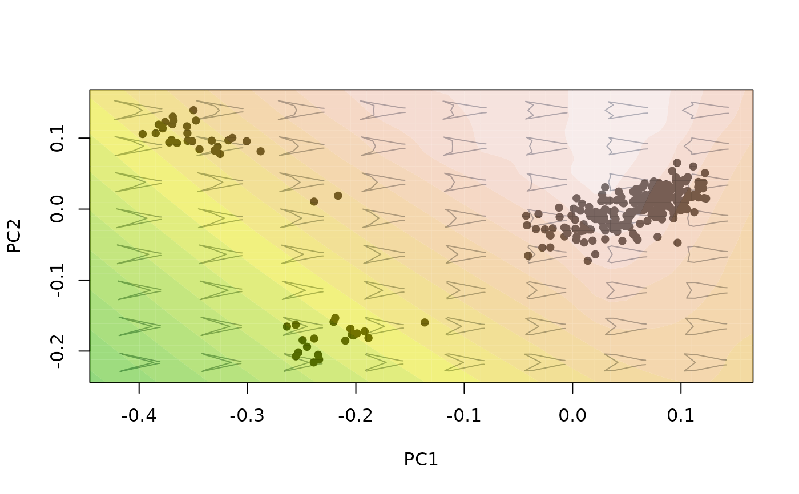

Compute and project a landscape surface as a contour map over an existing morphospace.
proj_landscape(
mspace,
shapes = NULL,
FUN = NULL,
X = NULL,
linear = FALSE,
resolution = 50,
expand = 1,
display = "contour",
nlevels = 50,
palette = grDevices::heat.colors,
alpha = 0.5,
lwd = 1,
lty = 1,
drawlabels = FALSE,
spar = 0.5,
pipe = TRUE,
...
)An "mspace" object.
Optional shape data. If provided, a landscape will be computed
for the region of the morphospace encompassing that sample of shapes
("empirical landscape"). If NULL, the landscape will be computed for
the set of background shape models ("theoretical landscape").
An optional ad hoc function to be applied to a set of shapes, stored in "two-dimensional" format, along its first margin (i.e. rows), and returning a single numeric value from each.
An optional vector containing the values assigned to each shape
(vector length and order must match those from the shapes provided in
shapes or from the background shape models, depending on whether or
not shapes have been provided).
Logical; whether to use linear interpolation (if FALSE,
a cubic spline interpolation is used instead. See akima::interp().
Numeric; the resolution used for interpolation.
Numeric; Magnification factor to extend (adjust) the reach of
the landscape, attained by extrapolating the x, y, and z values. Only
available for linear = FALSE.
Either "contour" or "filled.contour". For
bivariate landscapes only.
Number of levels (i.e., contours) to use for landscape representation.
A function defining a color palette to use for landscape representation.
Numeric; transparency factor for filled contours.
Integer; width of the lines depicting contours.
Integer; type of the lines depicting contours.
Logical; should the labels indicating the value of each surface contour be plotted?
Numeric; smoothing parameter used to smooth landscape outline in univariate representations.
Logical; is the function being included in a pipe?
Further arguments passed to FUN.
If a plot device with a morphospace is open, the landscape surface is
projected into it as a contour map using akima::interp(). If
pipe = FALSE, a list containing the x, y and z values used to plot
the landscape (x and z for univariate morphospaces) is returned invisibly.
If pipe = TRUE the supplied "mspace" object will be modified
by appending a $landsc slot to $projected, as well as by
adding some graphical parameters (stored into the $plotinfo slot),
and returned invisibly.
The purpose of this function is to generate and depict a 2- (for
univariate morphospaces) or 3-dimensonal (for bivariate morphospaces)
surface (i.e., a landscape), interpolated from values assigned to the set
of shapes projected into an existing morphospace. These can be a sample of
shapes specified by the user, producing a surface for a specific region of
the morphospace ("empirical landscapes"). Alternatively, the set of
background shape models can be used to generate a surface for the entire
observed morphospace ("theoretical morphospace"). Generally, the values
that are interpolated will represent a variable measuring functional
performance (although it can be any kind of continuous variable), and can
be either provided directly through the X argument or computed
automatically using an ad hoc function through the FUN
argument.
If the FUN argument is used, the function supplied must include a
model argument feeding the ad hoc function with a single
shape (stored as a vector of shape descriptors), and return a single
numeric value computed for or from that shape. If the X argument is
used instead, values should be in the same order than the shapes provided
in shapes, or than the background shape models (i.e., from left to
right and from bottom to top; see morphogrid,
plot_morphogrid2d and plot_morphogrid3d) if
shapes = NULL. Otherwise, landscape topography will be dissociated
from the shapes represented in the morphospace. See examples below.
Directly providing the values to be interpolated using X can be
useful when importing variables obtained using other software or pipelines.
If the user desires to compute those variables for the background shape
models, they can be extracted using extract_shapes) prior to
exporting or feeding them to their preferred analytical protocol.
#load data and packages
library(geomorph)
library(Morpho)
library(Momocs)
data("tails")
shapes <- tails$shapes
links <- tails$links
type <- tails$data$type
#Compute and plot adaptive landscape for wing tail shape:
##Using the FUN argument
###"Theoretical" landscapes
#plot morphospace with its associated adaptive landscape
mspace(shapes, links = links, nh = 8, nv = 8, size.model = 1.5,
cex.ldm = 0) %>%
proj_shapes(shapes, pch = 16) %>%
proj_landscape(nlevels = 60, FUN = morphospace:::computeLD, expand = 1.2,
lwd = 2)
##Using the X argument
#first, create morphospace and extract background shapes without plotting
msp <- mspace(shapes, links = links, nh = 8, nv = 8, size.model = 1.5,
cex.ldm = 0, plot = FALSE)
shapemodels2d <- two.d.array(extract_shapes(msp)$shapes)
#> Warning: there are no templates to warp; won't be returned
#run computeLD through the "two-dimensional" matrix of shapes models (this is
#the same thing the proj_landscape function is doing internally when FUN is
#used, but this vector could be replaced with some other variable obtained in
#a different way)
LDs <- apply(X = shapemodels2d, FUN = morphospace:::computeLD, MARGIN = 1)
#second, plot morphospace with its associated adaptive landscape
msp <- mspace(shapes, links = links, nh = 8, nv = 8, size.model = 1.5,
cex.ldm = 0) %>%
proj_shapes(shapes, pch = 16) %>%
proj_landscape(nlevels = 20, X = LDs, expand = 1.2,
palette = terrain.colors, display = "filled.contour")

#add scalebar using plot_mspace()
plot_mspace(msp, scalebar = TRUE)
#be careful to use the same morphospaces in the second and first steps.
#For example, retaining the LD values computed above but changing the axes
#represented by mspace will result in the same surface wrongly being
#projected over a different morphospace!
mspace(shapes, links = links, nh = 8, nv = 8, size.model = 1.5,
cex.ldm = 0, axes = c(2,3)) %>%
proj_shapes(shapes, pch = 16) %>%
proj_landscape(nlevels = 20, X = LDs, expand = 1.2,
palette = terrain.colors, display = "filled.contour")
###"Empirical" landscapes
#it is essentially the same, but providing a set of shapes with the shapes
#argument of proj_landscape. Let's compute it it only for Tyrannus species with
#non-deep forked tail shapes:
mspace(shapes, links = links, nh = 8, nv = 8, size.model = 1.5,
cex.ldm = 0) %>%
proj_shapes(shapes, pch = 16) %>%
proj_landscape(shapes = shapes[,,type == "NDF"], nlevels = 20,
linear = TRUE, FUN = morphospace:::computeLD, expand = 1.2,
display = "filled.contour")
#in this case, the resolution of the projected surface can be improved using
#the argument resolution (however, be aware this can be computationally
#intense! especially if a theoretical landscape is being computed)
mspace(shapes, links = links, nh = 8, nv = 8, size.model = 1.5,
cex.ldm = 0) %>%
proj_shapes(shapes, pch = 16) %>%
proj_landscape(shapes = shapes[,,type == "NDF"], nlevels = 20,
linear = TRUE, resolution = 200,
FUN = morphospace:::computeLD, expand = 1.2,
display = "filled.contour")